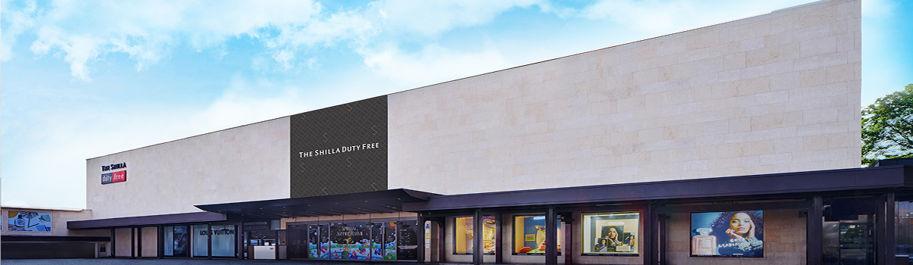

사업영역
사업영역
HOME > 사업영역 > TR부문
TR부문TR Business
최고의 브랜드와 차별화된 경험으로 일상의 경계를 넘어선 프리미엄 라이프스타일을 제안합니다.
The Pleasant moment
신라면세점의 새로운 BI 컨셉은 "The pleasant Moment"입니다.여행을 떠날 때의 설렘과 기쁨이
더욱 빛날 수 있도록 최고의 면세쇼핑 서비스를 제공하겠다는
신라면세점의 의지와 정신을 담고 있습니다.

신라면세점은 명품 부티크를 포함한 패션, 주얼리, 화장품, 시계류, 토산품 등 다양한 브랜드를 폭넓게 갖추고 있으며,
시내 면세점은 물론 온라인,
공항 면세점 등 온·오프라인을 아우르는 옴니채널 쇼핑 환경을 구축하여 고객 접점을 다각화하고 있습니다.
또한 데이터 기반의 개인화 마케팅과 디지털 서비스 확대를 통해 국내·외 고객에게 차별화된 프리미엄 쇼핑 경험을 선사하여 고객 편의를
지속 강화하기 위해 노력하고 있습니다.
- The Global Top Tier Retailer
- 신라면세점은 인천국제공항 뿐 아니라 싱가포르 창이국제공항, 홍콩 첵랍콕국제공항 등 글로벌 주요 허브 공항에 진출하며 사업 영역을 지속 확대해 왔습니다. 특히 패션·시계·주얼리·라이프스타일 카테고리를 중심으로 브랜드 경쟁력을 강화하고, 품격 있는 서비스와 다양한 고객 혜택을 결합해 최상의 서비스, 품격 있는 쇼핑을 제공하는 글로벌 면세 사업자입니다.